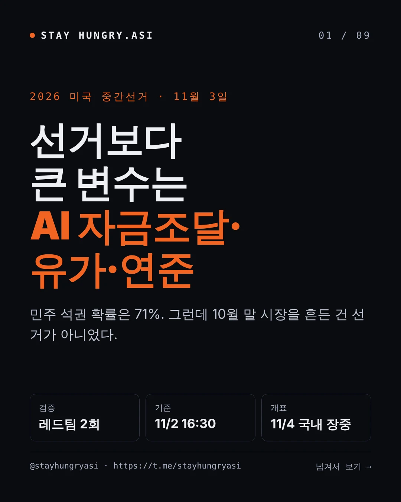
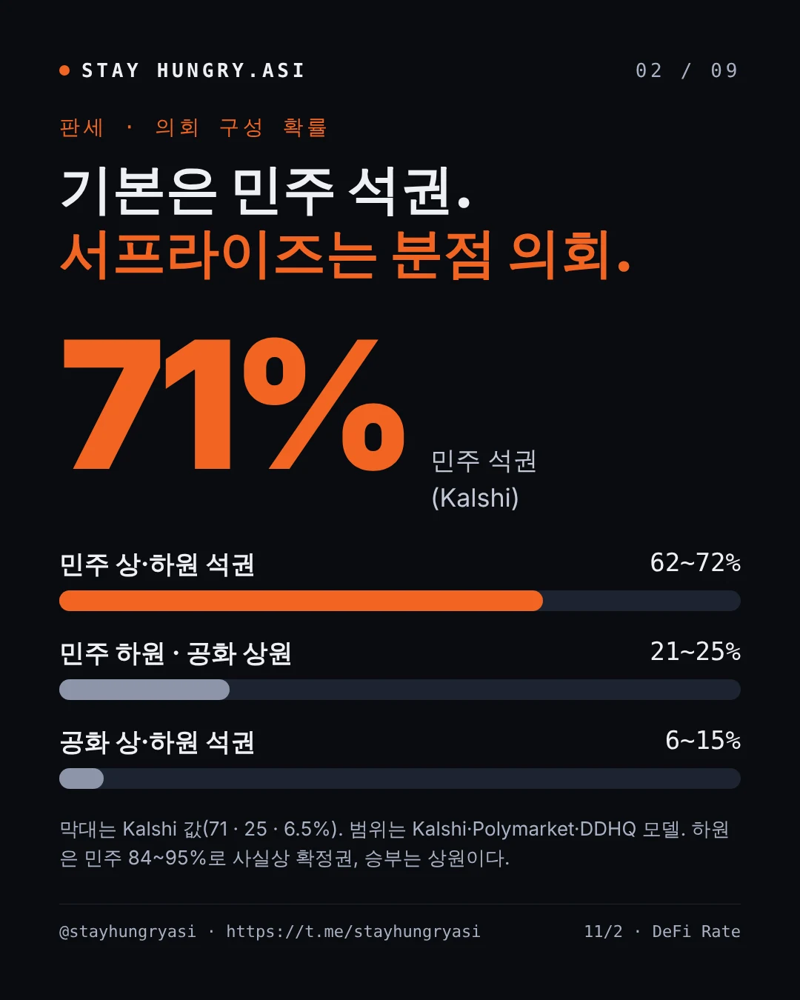
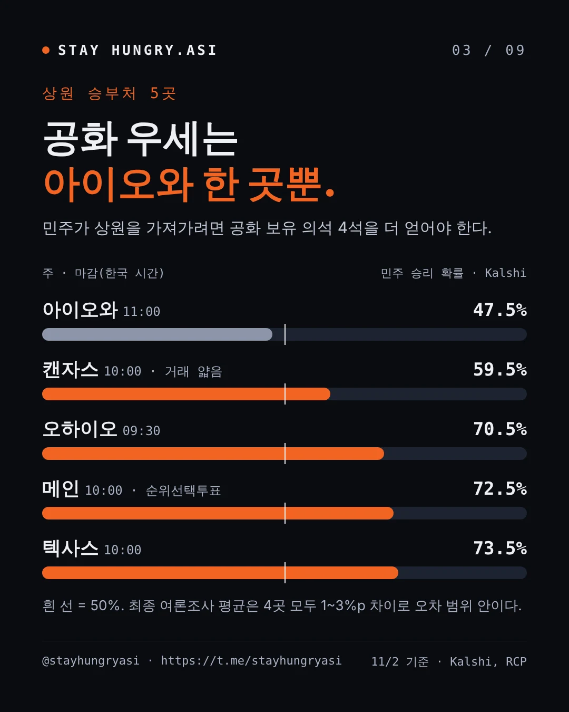
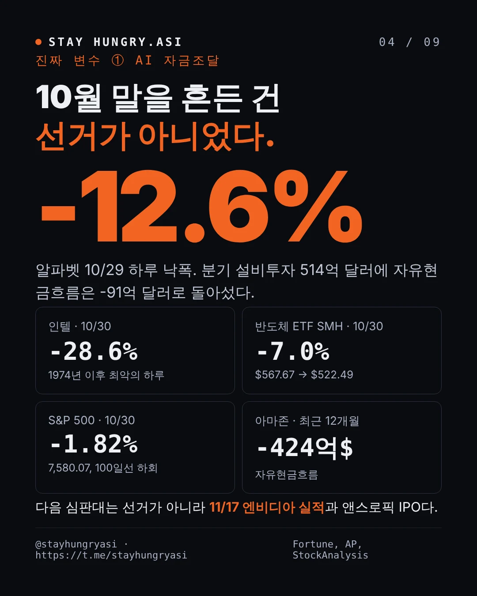
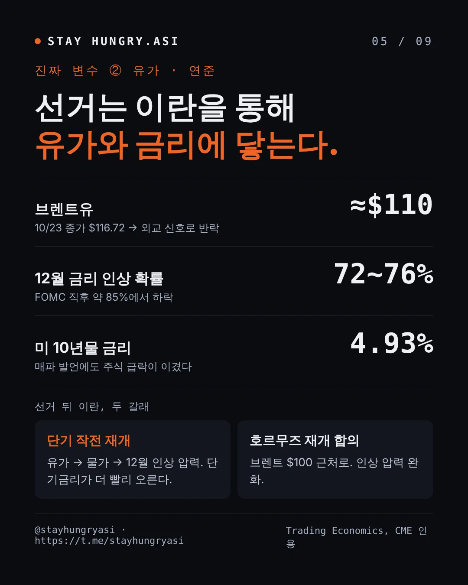
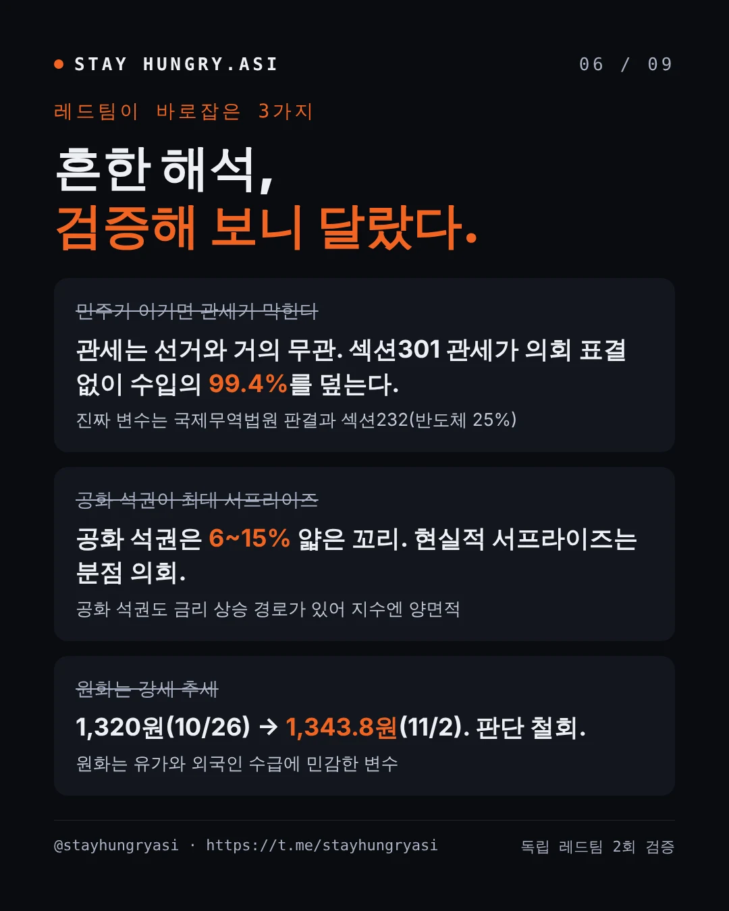
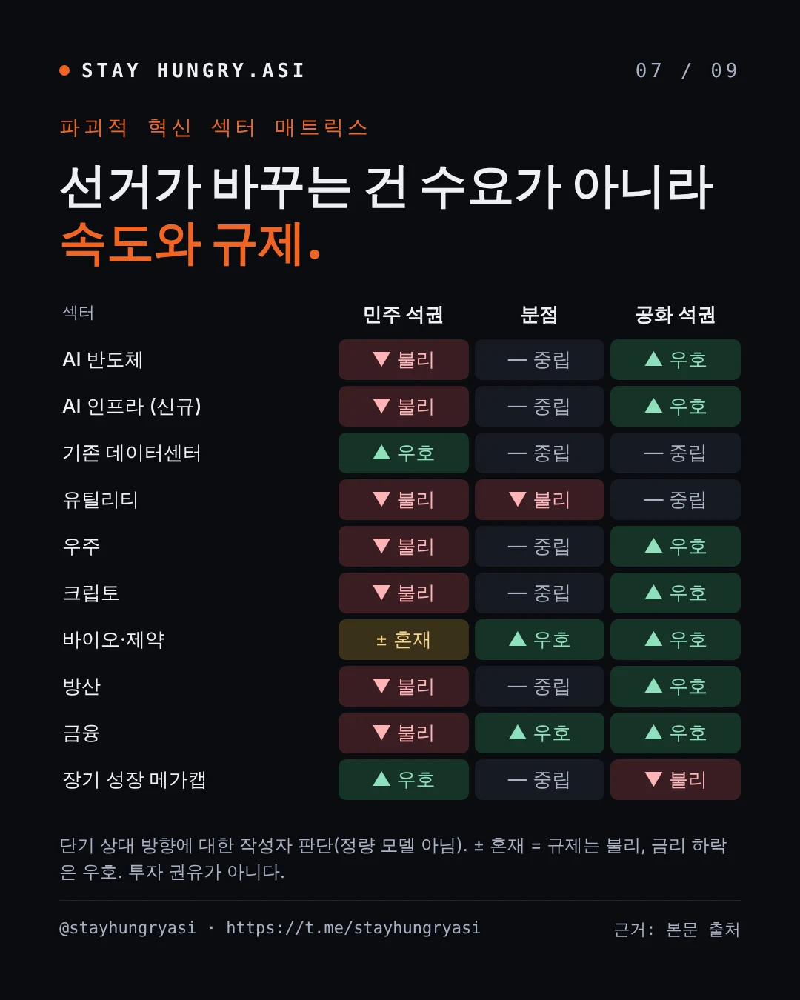
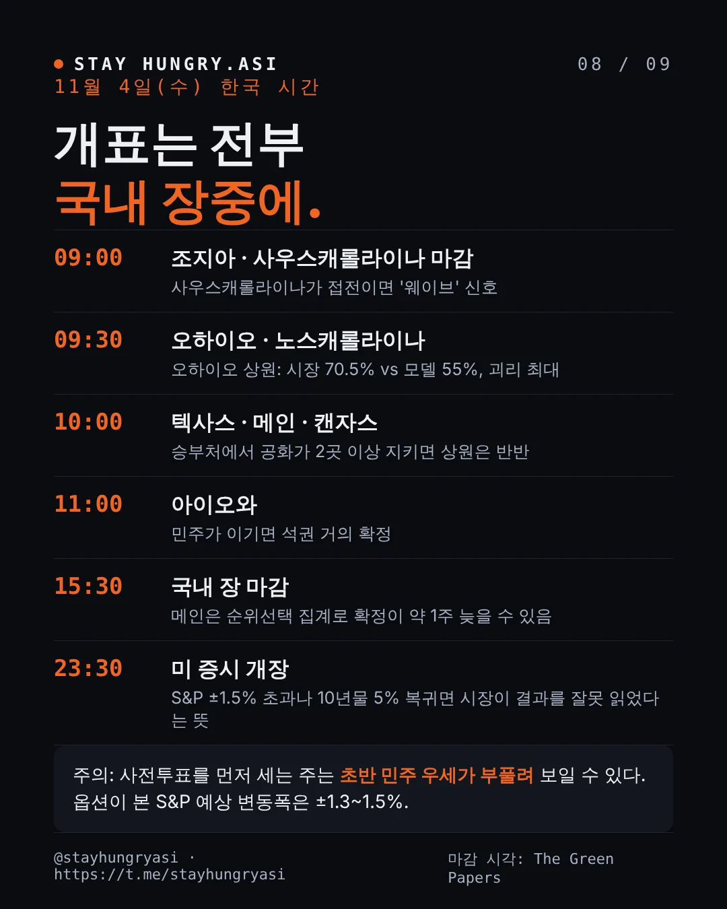
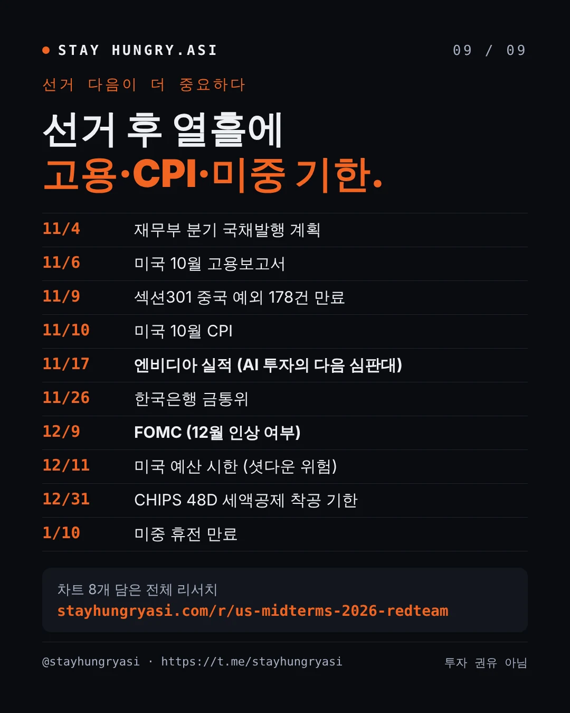

데이터 기준일 2026년 11월 2일 16:30(한국 시간) · 1차 검증 2026년 10월 29일 · @stayhungryasi · https://t.me/stayhungryasi
표기 규칙: 확률은 예측시장(Kalshi·Polymarket)과 모델(DDHQ 등)을 출처와 기준 시각을 붙여 구분했다. '추정'·'2차 보도'·'작성자 판단'은 마지막 섹션에 따로 모았다.
이해충돌 고지: 이 리서치는 앤트로픽의 AI(Claude)를 써서 작성했고, 본문 일정에 앤트로픽 IPO가 등장한다. 투자 권유가 아니다.
핵심만 9장으로 요약했다. 이미지를 누르면 크게 볼 수 있다. 수치는 11월 2일 16:30(한국 시간) 기준이다.









선거는 지수의 방향보다 섹터 회전과 '거시 충격의 시점'을 정한다. 지금 지수를 움직이는 것은 AI 투자의 자금조달 우려, 유가, 연준이다.
기본 시나리오는 민주 석권이다. 예측시장 71~72%, DDHQ 62%로 대부분 가격에 반영돼 있다. 현실적 서프라이즈는 분점 의회(21~25%)이고, 공화 석권(6~15%)은 얇은 꼬리다.
AI 자금조달 충격이 선거보다 크다. 알파벳 -12.6%, 인텔 -28.6%, 10/30 S&P -1.82%는 선거와 무관한 하이퍼스케일러 현금흐름 우려였다. 11/17 엔비디아 실적과 AI 대형 IPO가 다음 심판대다.
거시와 선거는 이란을 통해 엮여 있다. 선거 뒤 타격이면 유가→물가→단기금리 상승, 호르무즈 재개 합의면 브렌트 $100 근처다. 다만 10월 말에는 주식 급락이 매파 발언을 이겨 10년물이 4.93%로 내려왔다.
예산권의 핵심 창은 레임덕 회기(11~12월)다. 퇴임 공화 의회가 12/11 시한과 부채한도 증액 예산조정을 다룬다. 민주가 이기면 임시 연장으로 2027년 협상력을 남기려 할 수 있다.
공화 석권도 양면적이다. 금융·에너지·방산엔 호재지만, 적자 GDP 6.2%에서 추가 감세 기대는 기간프리미엄을 올려 장기 성장주에 부담이다. 기준선은 10년물 5.2%다.
관세는 선거와 거의 무관하다. 섹션301 강제노동 관세가 의회 표결 없이 수입의 99.4%를 덮는다. 변수는 언제든 나올 수 있는 CIT 판결과 섹션232다.
AI 인프라의 속도는 주·지방이 정한다. 주지사 36곳과 지역 주민투표 39건이 같은 날 열린다. 민주 하원이면 AI 특별위원회 헤드라인이 더해진다.
한국은 메모리 물량이 강하지만 밸류에이션은 미국 빅테크 자금조달에 묶여 있다. 원화는 1,343.8원으로 약해졌고, 유가에 민감한 변수다. 섹션232 반도체 관세, CHIPS 48D 착공 기한(12/31)이 선거보다 직접적이다.
이 문서는 판단 재료이며 투자 권유가 아니다. 작성자는 투자자문사가 아니다.
10월 29일 이후 시장을 흔든 것은 선거가 아니라 AI 투자의 자금조달 충격이었다. 선거 확률은 민주 쪽으로 더 기울었다. 독립 레드팀 2개가 11/2 16시30분(한국시간) 기준으로 모든 수치를 원문에서 다시 확인했다. 아래 본문의 차트와 표도 이 값으로 갱신했다.
| 항목 | 10/29 리포트 | 11/2 최신 | 판정 |
|---|---|---|---|
| 민주 석권 (Kalshi / Polymarket / DDHQ) | 63.5 / 66 / 55% | 71 / 72 / 62% | 컨센서스 강화 |
| 공화 석권 (Kalshi / Polymarket / DDHQ) | 8.8 / 7 / 19% | 6.5 / 6 / 15% | 꼬리 더 얇아짐 |
| 상원 민주 (Kalshi / DDHQ) | 64.2 / 58% | 71.0 / 64% | 민주 쪽 이동 |
| S&P 500 | 7,743.98 (10/28) | 7,580.07 (10/30, -1.82%) | AI 충격 |
| 나스닥 종합 | 26,549.85 | 25,437.00 (10/30, -2.86%) | 10월 -6.6% |
| 반도체 ETF SMH | $567.67 | $522.49 (10/30, -7.0%) | 인텔 -28.6% |
| VIX | 16.91 | 19.42 (10/30) | 상승 |
| 미 10년물 | 5.04~5.05% | 4.93% | 주식 급락에 하락 |
| 브렌트 | $114~115 | 약 $110 (11/2, -3%) | 외교 신호로 반락 |
| 12월 인상 확률 | 약 85% | 약 72~76% | 하락 |
| 코스피 | 6,012.44 (10/28) | 5,859.08 (11/2) | 10/30 -3.48% 후 반등 |
| 원/달러 | 1,331.6 | 1,343.8 (11/2) | 원화 강세 판단 깨짐 |
| 엔비디아 실적 | 11/18 (추정) | 11/17 확정 | 정정 |
| 중국 희토류 통제 유예 | 11/10 만료 | 1/10까지 연장설, 공식 문서는 희토류 미명시 | 불확실 |
출처: DeFi Rate, DDHQ, AP via La Nación, StockAnalysis, Trading Economics, Political.org, 뉴스핌, NVIDIA IR, Raw Materials
AI 자금조달 충격이 선거를 밀어냈다. 알파벳은 자유현금흐름 -91억 달러, 분기 설비투자 514억 달러를 내고 10/29 -12.6% 하락했다 (Fortune). 아마존의 최근 12개월 자유현금흐름은 -424억 달러이고 (SiliconANGLE), S&P는 메타 신용전망을 '부정적'으로 낮췄다 (Investing.com).
금리 경로는 반대로 움직였다. 로건·무살렘 총재가 추가 인상을 말했지만, 주식 급락으로 10년물은 4.93%로 내려왔다. 10년물 5%를 다시 보려면 유가와 주식 반등이 함께 필요하다.
유가는 선거 전에 이미 올랐다. 미국의 타격 없이도 호르무즈 기뢰·피격으로 브렌트가 $115~118까지 갔다가, 트럼프가 외교에 시간을 더 주겠다는 보도로 11/2 약 $110로 내려왔다 (The National). 선거 후 타격이면 스태그플레이션형 단기금리 상승, 호르무즈 재개 합의면 $100 근처가 양쪽 끝이다.
현실적인 서프라이즈는 공화 석권(6~15%)이 아니라 분점 의회(21~25%)다. 컨센서스가 붐빈다. 캔자스는 하루 새 51%에서 59.5%로 뛸 만큼 거래가 얇다.
예산권의 시점이 바뀌었다. 12/11 예산 시한은 퇴임하는 공화 의회가 처리한다. 공화당은 레임덕 회기에 부채한도 증액과 국방비를 담은 예산조정안을 검토 중이며, X-date는 2027년 말~2028년 초로 추정된다 (Roll Call).
한국은 메모리 물량은 강하지만 밸류에이션은 하이퍼스케일러 자금조달에 묶였다. 10월 수출은 사상 최대 1,153억 달러(+93.7%), 반도체 +259%였다. 그런데도 코스피는 10/30 -3.48%였고, 원화는 유가와 외국인 매도로 약해졌다 (Korea Herald).
옵션이 가격에 넣은 변동폭: 11/4 만기 S&P 옵션은 약 ±1.3%(Saxo), 수요일까지 스트래들은 1.51%(골드만)다. 1990년 이후 중간선거 다음 날 S&P 변동은 대체로 1% 미만이었다 (Saxo).
VIX 기간구조: 아직 정상(VIX9D 19.25 < VIX 19.42 < VIX3M 20.78)이다. 단기물이 장기물을 넘는 역전이 나오면 스트레스 신호다 (TMAD).
수급: BofA의 CTA 매도 기준(약 7,606)은 이미 깨졌고, 딜러 감마는 음수 전환 1% 이내다. 반면 S&P 기업의 약 80%가 이번 주 금요일까지 자사주 매입 금지 기간을 벗어난다 (TheStreet Pro).
초반 민주 우세가 줄어들 수 있다(추론). 사전투표는 사상 최대 4,960만 표이고, 정당 등록 집계 27개 주에서 민주 43%, 공화 32%다 (Newsweek). 사전투표를 먼저 세는 노스캐롤라이나·조지아·오하이오·텍사스는 초반 민주 리드가 당일 투표로 줄 수 있다. 캘리포니아·알래스카는 반대다. 한국 장중 Kalshi·선물 급변을 과잉 해석하지 말아야 한다.
확정 지연: 메인은 순위선택투표가 적용되며(콜린스 vs 트로이 잭슨 + 기명 후보 6명) 과거 약 1주일이 걸렸다 (FairVote). 알래스카는 해외 부재자 15일, 조지아는 과반 미달 시 12/1 결선이다. 2022년 상원은 선거 후 토요일에 확정됐다 (PBS).
소송 꼬리: 법무부의 알래스카 소송은 11/1 원고적격 없음으로 기각됐고 (Alaska's News Source), LA 카운티 개표 중단 요청도 1심과 9순회법원에서 모두 기각됐다.
독립 레드팀 2개(수치 팩트체크, 논리 공격)가 직전 분석의 논지 4개를 뒤집거나 낮췄고, 수치 4개를 바로잡았다. 두 팀은 직전 분석을 보지 않은 상태에서 웹 원문으로 검증했다.
| 구분 | 직전 서술 | 판정 | 정정 |
|---|---|---|---|
| 논지 | 민주가 한 원만 가져도 일괄 관세 차단 | 틀림 | 섹션301 강제노동 관세가 의회 없이 수입 약 99% 커버. 관세는 선거와 거의 무관 |
| 논지 | 공화 석권이 과소평가된 최대 서프라이즈 | 하향 | 실버 불레틴 모델은 오히려 시장보다 민주 쪽. 정치 예측시장은 우세 쪽을 오히려 과소평가하는 경향이 있다는 연구도 있음 (arXiv) |
| 논지 | 공화 석권 = 일방적 호재 | 보완 | 적자·10년물 5%에서 기간프리미엄 상승 경로가 있어 지수엔 양면적 |
| 논지 | 민주 석권 경로 = 청문회·헤드라인 | 보완 | 핵심은 예산·부채한도 권한. 2011년 분점 의회 부채한도 대치 때 S&P 약 -19% (Kiplinger) |
| 논지 | 거시는 선거와 별개 변수 | 보완 | 선거가 이란 타격 시점을 정해 유가와 연결됨 (Al Jazeera) |
| 논지 | 원화 약세는 유가 탓 | 보완 | 추세는 원화 강세(10/26 1,320원, 2024년 10월 이후 최강). 10/28 급등은 FOMC 전 달러 강세와 이스라엘 총선 후 유가가 겹친 하루 반락 |
| 수치 | S&P 7,722 = 10/28 장 초반 | 틀림 | 10/27 종가. 10/28 종가는 7,743.98 (Motley Fool) |
| 수치 | 코스피 10/7 6,995 | 틀림 | 10/7 종가 6,803.90. 6,995.39는 9/7 종가 (서울경제) |
| 수치 | 10년물 고점 = 2002년 4월 이후 최고 | 틀림 | 2002년 5월 이후 최고, 고점 5.31~5.33% |
| 수치 | BofA "민주 석권 시 -10%" (10월) | 출처 약함 | 하트넷의 8월 중순 주간 노트, 2차 보도로만 확인. 텍사스 주지사 등 조건이 붙은 꼬리 시나리오 (PrimeXBT) |
| 수치 | 엔비디아 실적 11/18 | 미확정 | 회사 미발표, 추정치 |
| 수치 | 중간선거 후 12개월 +17% (골드만) | 출처 오래됨 | 2022년 노트의 통계. 최신 BofA 통계로 대체(역사적 선례 섹션) |
하원은 민주 84~95%로 사실상 확정권이고, 상원도 민주 쪽으로 더 기울었다. 10/29 대비 모든 출처가 민주 쪽으로 5~7%p 이동했다. 모델 간 차이도 크다. 실버 불레틴은 시장보다 민주 쪽, 이코노미스트·DDHQ는 시장보다 보수적이다.
| 출처 | 하원 민주 | 상원 민주 | 기준일 |
|---|---|---|---|
| Kalshi (예측시장) | 93.65% | 71.0% | 11/2 |
| Polymarket (예측시장) | 94.5% | 72.5% | 11/2 |
| DDHQ (모델) | 84% (241석) | 64% (52석) | 11/2 |
| Silver Bulletin (모델) | 95.1% | 77.7% | 10/29 (최신치 유료) |
| VoteHub (모델) | 89% | 63% | 10/30 |
| Economist (모델) | — | 57.6% | 10/25 |
공화 석권은 6~15%로 줄었다. 예측시장에서는 분점 의회(24~25%)가 현실적인 서프라이즈 방향이다.
민주는 상원 과반을 위해 공화 보유 의석 4석 순증이 필요하다 (Covers). 아이오와는 시장(47.5%)과 DDHQ(공화 53%) 모두 공화 우세로 보는 유일한 승부처다. 시장과 모델의 괴리가 가장 큰 곳은 오하이오(15.5%p)다. 캔자스 Kalshi 가격은 하루 새 8.5%p 뛸 만큼 거래가 얇다.
최종 여론조사 평균(RCP, 10/28~30): 아이오와 힌슨(공화) +0.5, 오하이오 브라운(민주) +2.6, 텍사스 탈라리코(민주) +2.1, 메인 잭슨(민주) +1.4다. 네 곳 모두 오차 범위 안이다 (270toWin, Marist).
지수는 10월 사상 최고치에서 밀려났고, 이번엔 금리가 아니라 AI 투자 자금조달 우려가 누르고 있다. 10/30 S&P는 100일 이동평균을 4월 이후 처음 하회했다 (TheStreet). 반면 3분기 GDP는 3.4%로 예상(3.1%)을 웃돌았고, 9월 PCE는 3.6%(근원 3.1%)로 물가는 여전히 높다 (Trading Economics).
| 지표 | 수준 | 기준일 |
|---|---|---|
| S&P 500 | 7,580.07 (주간 -0.6%, 사상 최고 종가 7,818.93은 10/6) | 10/30 종가 |
| 나스닥 종합 | 25,437.00 (10월 6일 고점 대비 -7.8%) | 10/30 종가 |
| 반도체 ETF SMH | $522.49 (하루 -7.0%) | 10/30 종가 |
| VIX | 19.42 (VIX9D 19.25, VIX3M 20.78) | 10/30 종가 |
| 미 10년물 | 4.93% (10월 -36bp, 10월 초 고점 5.31~5.33%) | 10/30~11/2 |
| 브렌트 | 약 $110 (10/23 종가 $116.72, 주간 상승분 반납) | 11/2 |
| WTI | 약 $100.6~101.0 | 11/2 |
| 연준 기준금리 | 3.75~4.00% (10/28 10대 2 동결) | — |
| 12월 인상 확률 | 약 72~76% (FOMC 12/8~9) | 10/30 |
| 원/달러 | 1,343.8 | 11/2 |
| 코스피 | 5,859.08 | 11/2 |
출처: AP via La Nación(10/30 종가), StockAnalysis, TMAD, Political.org, Trading Economics, 뉴스핌(11/2) / 10/28 기준 자료: Fool, Cappnotes, Yahoo Finance, Trading Economics, 뉴시스, SBS
선거→유가 경로는 선거 후 2~3주 안에, 예산 경로는 12/11과 2027년 중반 부채한도(41.1조 달러, X-date 2027년 늦겨울~2028년 2월 추정)에 작동한다 (NTU).
서프라이즈의 크기는 공화 석권(C)이 가장 크지만, 지수에서의 방향은 채권시장 반응에 달려 있다. 비대칭이 뚜렷한 곳은 지수가 아니라 섹터다.
A(기본): 역사적으로 민주 석권은 광범위 주식에 최선의 결과였고 금융·헬스케어가 뒤처졌다는 분석이 있다 (Saxo). BofA 하트넷의 '-10%' 경고는 조건부 꼬리 시나리오다.
C(꼬리): 공화 석권 뒤에는 금리 상승으로 주식이 약해진 사례가 있다(Saxo). 적자 GDP 6.2%에서 ‘예산조정 2.0’ 기대는 장기물 매도로 이어질 수 있다.
필리버스터: 트럼프는 폐지를 밀고 있고, CLARITY법은 공화당 4명의 이탈로도 막혔다 (The Defiant, Election Law Blog). 공화 석권이어도 입법 제약은 남는다.
연준 독립성: 대법원은 쿡 이사를 적법절차 없이 해임할 수 없다고 판단했고(6/29), 독립기관 판례를 바꾸면서도 연준은 예외로 두었다 (Axios, DLA Piper). 상원 구성이 연준 독립성에 주는 제도적 리스크는 우려보다 작다.
선거가 바꾸는 것은 혁신 섹터의 수요가 아니라 속도(인허가·규제·자본비용)다. 민주 석권(A)에선 규제 채널과 금리 채널이 반대로 움직여, 같은 기술주라도 고베타 인프라와 현금흐름 두터운 메가캡의 방향이 갈린다.
| 섹터 | 선거가 바꾸는 것 | 핵심 레벨 | 내부 차별화 |
|---|---|---|---|
| AI 반도체 | 속도와 대중 수출통제. 수요(내년 AI 인프라 투자 1조 달러+)는 무관 (Reuters) | 연방 | 고베타 반도체주가 선거 베타 최대. SMH는 연초 대비 약 +57~58%(추정) |
| AI 인프라 | 인허가 속도와 전력비 부담 | 주·지방 | 기존 운영사 가격결정력 상승, 신규 개발·유틸리티 불리 |
| 우주 | 계약 배분과 감독. 머스크 정치자금 약 3.66억 달러, 올해 SpaceX 연방 수주 67.8억 달러 (Digital Today) | 연방(세출권) | 민주 하원 시 SpaceX(SPCX)·테슬라 계약 조사 위험. SPCX 락업 해제는 12월 초 추정 |
| 크립토 | 규제 프레임을 누가 쓰는가. CLARITY법 올해 통과 확률 6.5% (The Defiant) | 연방 | 거래소·인프라주는 입법 민감, 비트코인은 금리 민감 |
| 바이오·제약 | 약가와 ACA 보조금 (MarketBeat) | 연방 | 대형 제약은 약가 리스크, 바이오텍은 금리 하락 수혜 |
| 방산 | 증액 속도와 이란 작전 예산. FY27 국방수권법은 하원 통과, 상원 계류 | 연방 | 자율·AI 방산은 초당적 수요 |
정정: 일괄 관세는 의회 없이 이미 부활했다. IEEPA 무효화(2/20)와 섹션122 만료(7/24) 뒤, 행정부는 7월 23~24일 섹션301 '강제노동' 관세 10~12.5%를 부과했다(세율 구간은 60개국, 소송 서면 기준 대상은 86개국). 수입의 99.4%를 덮고 의회 표결은 없었다 (Cleary Gottlieb, CRS). 한국은 12.5%로 한미 합의 상한 15% 이내다 (아시아경제). 견제 장치는 의회가 아니라 법원이며, 25개 주가 8월 3일 국제무역법원(CIT)에 제소했다. 9/30 변론 뒤 판결은 아직 없고, 재판부가 USTR에 대체로 회의적이었다는 보도가 있다(헤드라인만 확인, ExFreight). 판결은 선거와 무관하게 언제든 나올 수 있는 이진 이벤트다 (Manufacturing Dive).
| 관세 수단 | 현재 상태 | 선거 결과에 따른 변화 |
|---|---|---|
| 섹션301 강제노동 (10~12.5%, 수입 99.4%) | 시행 중, CIT 소송 계류 | 거의 없음. 민주 의회도 거부권 때문에 폐지 불가 |
| 섹션232 반도체 (25%, 2026년 1월부터) | 시행 중, 최대 100% 위협 (Korea Times) | 없음. 행정부 재량 |
| IEEPA (위헌) | 징수 약 1,660억 달러 중 8월까지 약 1,000억 달러 환급 (Withers) | 없음 |
| 섹션301 중국 예외 178건 | 11/9 23:59 ET 만료, 연장 고시 없음 (Thomson Reuters) | 없음 |
결론: 관세 리스크는 어느 당이 이기든 거의 같다. 변수는 CIT 판결과 섹션232 결정이다.
한국 반도체: 섹션232 25%에 직접 노출된다. '최혜대우' 조항은 있지만 생산 연계 면제는 없다.
미중 기한은 각각 따로 간다: 휴전은 1월 10일까지 연장됐지만, 항만수수료 유예(USTR가 1/9까지 연장 제안, 의견 마감 10/30, Holland & Knight), 중국 희토류 통제 유예(휴전과 함께 1/10 연장설, 중국 상무부 발표는 희토류 미명시), 갈륨·게르마늄·안티몬 완화(11/27, Thomson Reuters)는 별도 기한이다.
재정 맥락: FY26 적자는 1.99조 달러(GDP 대비 6.2%), 이자비용은 사상 최대 1.36조 달러다. 순관세수입은 11% 줄어든 1,730억 달러였다 (BNN Bloomberg).
데이터센터의 속도를 정하는 표는 연방의회가 아니라 같은 날 치러지는 주지사·공공요금위원회·지역 주민투표에 있다. 애널리스트들은 민주 석권에도 데이터센터 건설을 크게 막는 연방법 통과 가능성은 낮게 보지만, 청문회와 조사는 늘어날 것으로 본다 (Reuters via Kitco).
| 레벨 | 11/3에 결정되는 것 | 시장 경로 |
|---|---|---|
| 연방의회 | 조사·소환 권한. 제프리스 하원 민주 대표가 소환권 있는 AI 특별위원회를 검토 중 (AI Weekly). 주 AI법 연방 선점(preemption)은 이미 정체 (CASRAI) | 모델 개발사·하이퍼스케일러의 헤드라인·규제 준수 비용 |
| 주지사 36곳 | 대다수 후보가 확장 지지 + 규제·지역 통제 조건부, 무조건 지지는 10명 미만 (MultiState) | 2027년 인허가·세제 혜택 |
| 공공요금위원회 | 데이터센터 전력비를 누가 내는가 | 유틸리티 요금 전가력 |
| 지역 주민투표 | 8개 주 39건, 그중 오하이오 21건. 이미 결정된 4건은 모두 규제 강화 쪽 (Newsweek) | 개별 프로젝트 지연 |
반감은 초당적이다: 9월 여론조사에서 데이터센터 건설 반대 61%, 찬성 34%였고 공화 지지층도 47%가 반대했다 (Arabian Post).
이미 진행 중: 뉴욕주는 미국 최초 주 단위 건설 모라토리엄에 서명했고, 행정부는 공화당 주지사들에게 전력·용수 비용을 데이터센터가 부담하는 서약을 권하고 있다 (The Week).
선행 지표: 2025년 조지아 공공서비스위원회 선거에서 빅테크 특혜 요금을 비판한 후보 2명이 현직을 꺾었다 (inkl).
2차 효과: 신규 공급이 막히면 기존 데이터센터 운영사의 가격결정력이 오르고, 신규 개발사와 요금 규제를 받는 유틸리티가 불리해진다 (Seeking Alpha).
한국은 메모리 물량이 사상 최강이지만, 주가는 선거가 아니라 미국 하이퍼스케일러의 자금조달 우려에 흔들린다. 10/28 반등은 SK하이닉스 3분기 영업이익 83.3조원과 60조원 주주환원이 끌었고 (IBTimes), 10/30에는 알파벳·인텔 충격으로 SK하이닉스 -8.45%, 삼성전자 -5.93%가 나왔다. 삼성전자 3분기(10/29 발표) DS 부문 영업이익은 106.5조원으로 컨센서스 108.5조원을 소폭 밑돌았다 (삼성전자, 파이낸셜뉴스). 코스피는 6/22 사상 최고 종가 9,114.55 대비 약 36% 아래다.
| 변수 | 현재 상태 | 선거와의 관계 |
|---|---|---|
| 10월 수출 | 사상 최대 1,153억 달러(+93.7%), 반도체 +259% (Korea Herald) | 없음. 메모리 수요는 강하다 |
| 미국 하이퍼스케일러 자금조달 | 알파벳·아마존 자유현금흐름 적자, 메타 신용전망 하향 | 간접. 현재 코스피 밸류에이션의 최대 변수 |
| CHIPS 48D 세액공제 (35%) | 착공 기한 12/31. 삼성 테일러, SK하이닉스 인디애나에 직결 (Holland & Knight) | 직접: 레임덕 회기 연장 여부 |
| 섹션232 반도체 관세 | 25%, 최대 100% 위협 (Korea Times) | 거의 없음 (행정부 재량) |
| 한미 3,500억 달러 투자 (조선 1,500억) | 한국 특별법 3/12 통과, 미 의회 표결 불필요 (KEIA) | 약함 |
| 미중 기한 | 11/9 23:59 ET (301 예외 178건), 11/27 (갈륨 등), 1/10 (휴전, 희토류 포함설) | 간접 |
| 한은 금통위 | 11/26, 인상 예상 (10/22 3.00% 동결) (Trading Economics) | 간접 |
| 원/달러 | 10/26 1,320원(2024년 10월 이후 최강) → 11/2 1,343.8원 (뉴스핌) | A: 달러 약세 경향, 단 유가와 외국인 수급이 더 크다 |
원화 강세 추세 판단은 철회한다. 10/26 1,320원에서 11/2 1,343.8원으로 약해졌다. 11/2 외국인은 3,680억원 순매도, 기관은 1.23조원 순매수했다. 원화는 유가와 외국인 수급에 민감한 변수로 보는 것이 맞다.
개표일 변동성의 기초값이 크다: 최근 5거래일에 +6.6%, -1.2%, -3.5%, +2.2%가 나왔다. 미국 개표는 국내 장중(11/4 09:00 이후)에 진행된다.
개표일 한국 신호: 원/달러 1,350원 돌파와 나스닥·반도체 선물 -2% 이상이 겹치면, 선거보다 AI 자금조달 충격이 여전히 코스피를 움직이는 것이다.
선거 다음 열흘 안에 국채발행 계획(11/4), 고용(11/6), CPI와 미중 기한(11/9~10)이 몰려 있다. 2010년(QE2)과 2022년(CPI)처럼 선거 직후 거시 이벤트가 결과를 덮을 가능성이 높다.
출처: 고용·CPI (BLS), 국채발행 (Treasury), FOMC (Fattail), 레임덕·예산 (Roll Call, Harvard OFR), 실적 (Amazon, MacDailyNews, NVIDIA IR), 앤스로픽 S-1 (SEC EDGAR), SPCX (Wikipedia, 락업은 상장일+180일 계산), 미중 (Thomson Reuters, Raw Materials).
11월 4일(수) 오전 9시부터 오후 3시까지, 미국 개표의 거의 전부가 국내 장중에 진행된다. 서머타임이 11/1 끝나 한국시간 = 미 동부 + 14시간이다 (The Green Papers). 옵션은 11/4 S&P 변동폭을 ±1.3~1.5%로 보고 있다. 초반에는 사전투표가 먼저 집계돼 민주 리드가 과장될 수 있다(D-1 섹션 참고).
| 한국시간 | 미국 일정 (동부) | 확인할 것 (11/2 Kalshi 민주 %) | 읽는 법 |
|---|---|---|---|
| 11/3 06:30 | 애플 실적 (11/2 장 마감 후) | 빅테크 심리 | AI 자금조달 우려가 이어지는지 |
| 11/4 09:00 | 오후 7시: 조지아, 사우스캐롤라이나 | 사우스캐롤라이나 상원 (30.5%) | 민주가 접전이면 '웨이브' 신호 |
| 09:30 | 7시 30분: 오하이오, 노스캐롤라이나 | 오하이오 상원 (70.5%, 모델 55%) | 초반 민주 우세는 당일 투표로 줄 수 있음 |
| 10:00 | 8시: 메인, 펜실베이니아, 텍사스·미시간·캔자스 대부분 | 텍사스(73.5%)·메인(72.5%)·캔자스(59.5%, 유동성 얇음) | 오하이오·노스캐롤라이나·텍사스·메인 중 공화 2곳 수성이면 상원은 반반으로 |
| 11:00 | 9시: 아이오와, 네브래스카, 애리조나 | 아이오와 상원 (47.5%, 유일한 공화 우세 승부처) | 민주 승리 시 민주 석권 거의 확정 |
| 12:00~13:00 | 네바다, 캘리포니아 | 하원 의석수 흐름 | 캘리포니아는 늦게 도착하는 우편투표로 민주 쪽 이동 |
| 14:00~15:00 | 자정: 알래스카 | 알래스카 상원 (71.5%) | 해외 부재자 15일, 순위선택 집계로 확정 늦음 |
| 15:30 | 국내 장 마감 | 메인 1차 집계 과반 여부, 불복·소송 발언 | 순위선택 집계 시 약 1주 |
| 22:30 | 11/4 오전 8시 30분 | 재무부 분기 국채발행 계획 | 장기물 공급 축소설 확인 |
| 23:30 | 미 증시 개장 | S&P 선물 ±1.5% 초과, VIX9D > VIX 역전, 10년물 5.0% 복귀, 브렌트 | 하나라도 나오면 시장이 결과를 잘못 가격에 넣었다는 뜻 |
| 11/6 22:30 | 10월 고용 (컨센서스 +6.5만, 실업률 4.2%) | 고용·임금 | 12월 인상 확률 재조정 |
| 11/10 22:30 | 10월 CPI | 근원 물가 | 2022년처럼 선거보다 큰 하루가 될 수 있음 |
| 11/18 07:00 | 11/17 오후 5시 | 엔비디아 실적 (확정) | AI 투자 사이클의 다음 심판대 |
출처: DeFi Rate, Saxo, BLS, Treasury, NVIDIA IR, TheStreet Pro
개표 전날(11/3) 애플 실적과 Kalshi 상원 가격 확인
11/4 장중 원·달러와 코스피200 선물 동시 모니터링
11/9~10 미중 기한(301 예외, 희토류) 연장 고시 여부 확인
중간선거 후 1년 수익률은 역사적으로 강했지만, 선거 다음 주는 결과보다 직후 거시 이벤트가 움직였다. 가장 가까운 선례는 신임 의장이 금리를 올리던 2018년이다.
| 연도 | 선거 다음 날·주 | 실제 동인 |
|---|---|---|
| 2022 | 11/9 -2.08%, 11/10 CPI로 +5.5% | 시장이 레드 웨이브를 가격에 반영했으나 빗나감. CPI가 결과를 덮음 |
| 2018 | 11/7 +2.1% | 신임 의장 금리 인상. 4분기 중 12/24 저점까지 약 -20% |
| 2014 | 확인 불가 | 특기할 동인 없음 |
| 2010 | 11/5 주간 +3.6% | 11/3 QE2 발표. 2011년 부채한도 대치로 -19% |
| 2006 | 11/8 다우 사상 최고 | 유가·금리·주택. 2007년 고점으로 |
출처: Motley Fool, Fortune, Yahoo 2022, First Trust, Kiplinger
BofA(10/6): 2차대전 이후 중간선거 뒤 6개월·12개월 구간은 한 번도 빠지지 않고 평균 약 +13%, +14% (InvestingLive).
LSEG: 1986년 이후 10번 모두 52주 수익률 플러스, 평균 +13.2% (Kaohoon).
골드만: 1974년 이후 중간선거 해 8/1~선거일 중앙값 0%, 이후 3개월 +6% (Hellenic Shipping News).
주의: 계절성은 약한 사전 확률이다. S&P가 사상 최고치 부근이라 ‘선거 후 안도 랠리’의 여지가 과거 평균보다 작다.
아래 항목은 확정 사실이 아니라 추정·2차 보도·작성자 판단이다. 나머지 수치는 각 섹션의 링크에서 원문을 확인했다(독립 레드팀 2개가 교차 확인).
| 항목 | 상태 (11/2) | 이유 |
|---|---|---|
| 엔비디아 실적일 | 해결: 11/17 확정 | 회사 10/28 발표 |
| 재무부 분기 국채발행 계획 | 해결: 11/4 확정 | 재무부 8/5 발표문. 11/2 재원 추정치 발표일은 미확인 |
| 앤스로픽 IPO | S-1 공개 제출(10/26)은 SEC 원문 확인 | 공모 규모·밸류에이션은 WSJ·블룸버그 보도로만 확인 (SEC EDGAR) |
| 중국 희토류 통제 유예 기한 | 불확실 | 11/10 vs 1/10. 중국 상무부 발표문에 희토류 미명시 |
| SPCX 락업 해제 12/9 | 추정 | 상장일(6/12) + 180일 계산 |
| BofA 하트넷 '-10%' | 2차 보도 | 원문 노트 접근 불가 |
| 실버 불레틴 최신치 | 10/29 수치 사용 | 10/30 이후는 유료. 실버 본인은 "상원 79" 발언 |
| 12월 인상 확률 72~76% | 2차 인용 | CME FedWatch 직접 접속 실패, 11/2 수치 없음 |
| 브렌트 10/30 정산가 | 미확인 | "$113 상회"로만 확인 |
| 캔자스 Kalshi 59.5% | 신뢰도 낮음 | 하루 새 8.5%p 이동, 거래 얇음 |
| CIT 섭션301 소송 '회의적' | 헤드라인만 | MLex 본문 접근 불가 |
| 개표 순서에 따른 초반 민주 우세 | 추론 | 사전투표 비중과 주별 집계 순서에서 추정 |
| 섹터 히트맵 방향 | 작성자 판단 | 근거는 본문 출처, 정량 모델 아님 |
| 주별 재검표 기준 | 미확인 | 주마다 다름, 개표일 각 주 선거당국 공지 확인 |
이 문서는 판단 재료이며 매매 권유가 아니다. 작성자는 투자자문사가 아니다.
정치 관련 서술은 각 당의 정책 경로가 시장에 미치는 경로로만 다뤘고, 어느 쪽 결과가 바람직한지는 평가하지 않았다.
출처 표기: @stayhungryasi · https://t.me/stayhungryasi